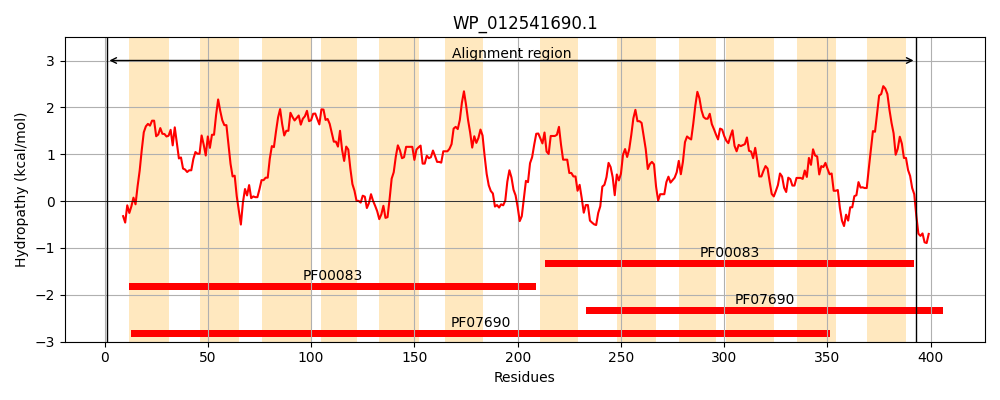
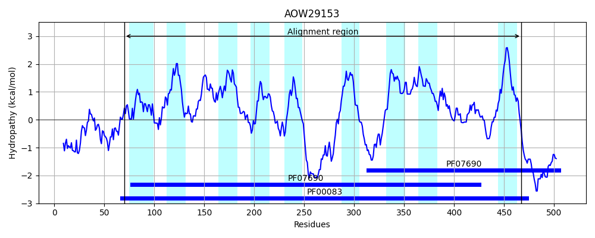
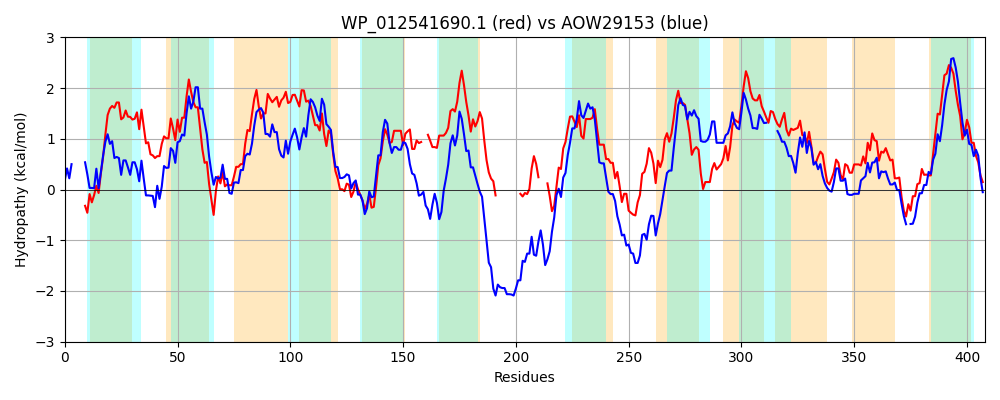

Hit Accession: AOW29153
Hit TCID: 2.A.1.12.3
Hit Description: gnl|BL_ORD_ID|1371 gnl|TC-DB|AOW29153.1|2.A.1.12.3 Jen2p [Candida albicans SC5314]
Mach Len: 408
e:0.000000
Query TMS Count : 12
Hit TMS Count: 9
TMS-Overlap Score: 6.650000
Predicted Substrates:CHEBI:50744;citrate salt, CHEBI:16810;2-oxoglutarate(2-), CHEBI:15595;malate(2-), CHEBI:30031;succinate(2-), CHEBI:29806;fumarate(2-), CHEBI:24996;lactate
BLAST Alignment:
Score: 642 , Bit scores: 251 bits, E-value: 8.6e-79, Alignment length: 408, Percentage identity: 36
Query: 1 MHGWTSRQRNAAIASFLSWTLDAFDFFLLVFLLSDIAHSFHVDLEEVTLAILLTLAVRPIGALIFGRAAEKYGRKPILMLNIVFFSAFELLSAAAPSLLLFFLLRVLYGVAMGGIWGVASSLAMETIPDRSRGLMSGLFQAGYPFGYLLAAVAYGLLFE--QLGWRGMFVIGAAPVLLLPFIYFCVEESPVW----------LAARQSKAS---TALLPVLRSHWKLCLYLVVLMAAFNFFSHGTQDLYPVFLKVQHGFEPKTVSIIAVCYNIASIMGGVFFGSLSEKIGRRKAIMIAALLALPVIPLWAFASGSLALGAGAFLMQFMVQGAWGVIPTWLNELVPANTRAVLPGFVYQLGNLLASVNATLQASIAQHHGHNYGLAMALVAGTVAIVITVLTFFGREGR 393
+H W N F +WT DA DFF+ +S+IA +++V+ I L L +R +GALIFG + YGRK ++N+ ++ + + F LR L+GVAMGG++G+ ++ A+ P ++RG++SG+FQ GY FGYLLA V + + + WR +F A P ++L F E+ + + SKA+ + L +W + +YL+ LMA FNF SHG+QDLYP L Q+ + +++ VC N+ ++ GG+ LS IGRR AI+I ++A +I WAF + AF MQF +QG+W V+P L+EL P + R+ + G YQLGNL++S ++T++A+I + H+YG MA+ G V + + F G E R
Sbjct: 70 LHQW-----NFFFLGFWAWTWDALDFFVTSLNVSNIAEDLDSTVKDVSWGITLVLMLRTVGALIFGAIGDTYGRKWPYIINLSCLMVIQIGTGFVTTFQQFLGLRALFGVAMGGLFGICAAEALGDAPKKARGVLSGIFQEGYAFGYLLAVVFQRAIADTTEKTWRSVFWFSAGPPIILIIWRFINPETDSYQRQKERFDQGAVQKNSKAAEFKSQAKKALNQYWLIIVYLIFLMAGFNFSSHGSQDLYPTMLTKQYHYGKDKSTVVNVCANLGALAGGIVIAHLSTFIGRRTAILIGNVIAGIMIYFWAFH----PMWITAFFMQFGIQGSWSVVPIHLSELSPPHFRSFVSGVSYQLGNLVSSASSTIEATI-EEQIHDYGKTMAIFIGAVLAYLMFVVFIGPENR 467 | Protein Hydropathy Plots: |
|---|
|  |  |
Pairwise Alignment-Hydropathy Plot:
|
|---|
|  |